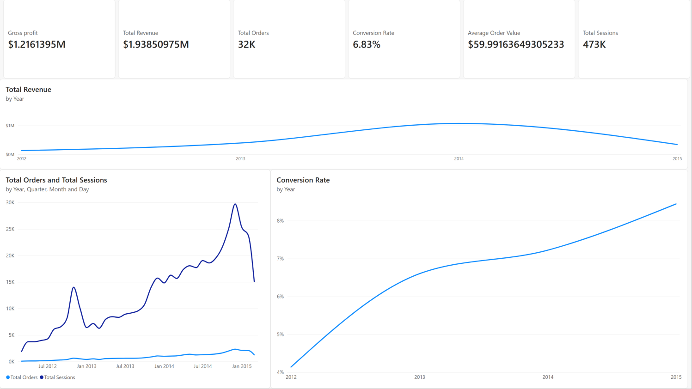
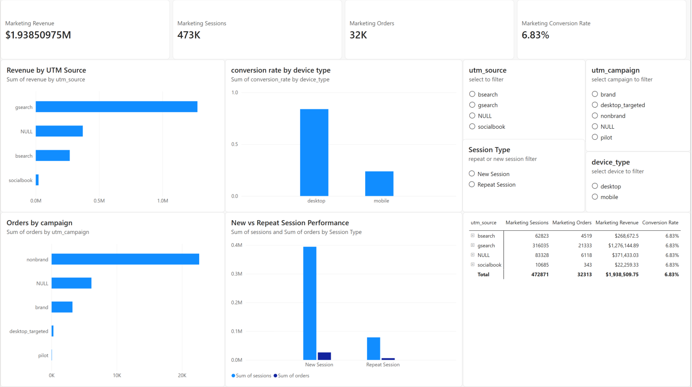
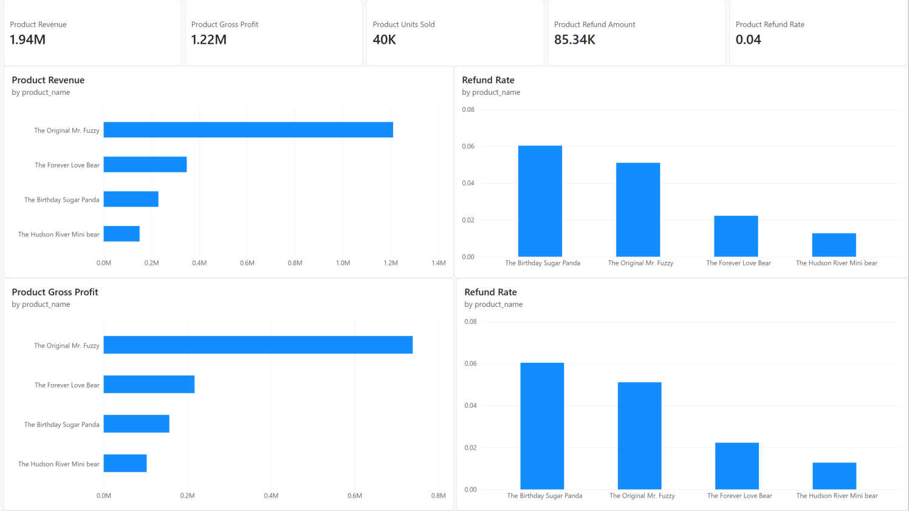
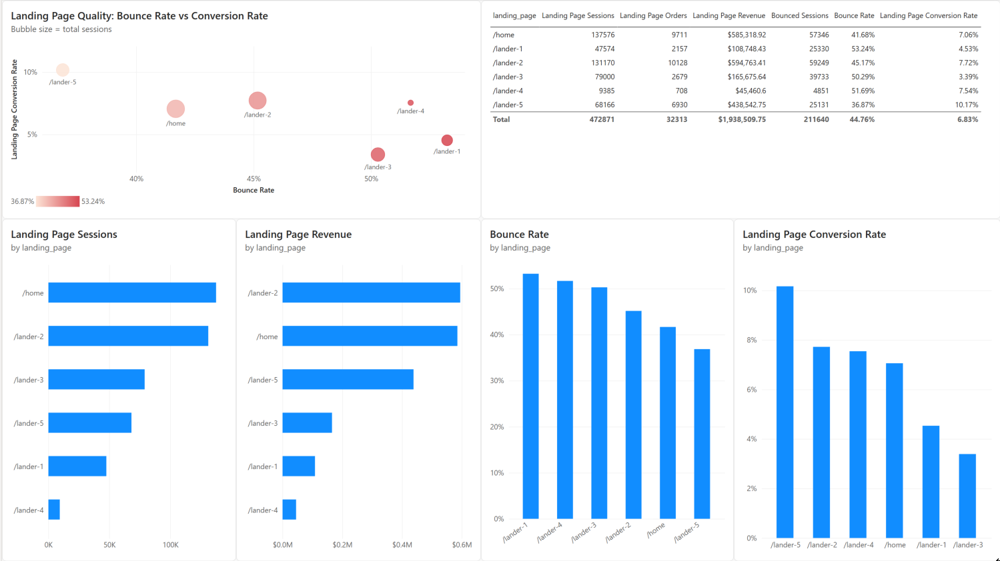

Measure commercial performance
Track website sessions, orders, revenue, gross profit, average order value, and conversion rate over time.
SQL + Power BI Analytics Project
A marketing, conversion, product, and landing-page performance analysis for an online toy retailer.
This project analyzes the end-to-end performance of Maven Fuzzy Factory, an online retailer selling teddy bear products. Raw e-commerce data was loaded into PostgreSQL, validated, and transformed into analytics views. The resulting data was exported for an interactive Power BI dashboard.
The dashboard is organised into four reporting areas: executive performance, marketing performance, product and refund performance, and landing-page performance. Together, these views connect website traffic and acquisition activity to orders, revenue, gross profit, refunds, and conversion outcomes.
The objective is to give Maven Fuzzy Factory a clear, evidence-based view of how visitors move from acquisition channels and landing pages to orders and revenue, while identifying opportunities to improve marketing efficiency, conversion performance, product profitability, and refund outcomes.
Track website sessions, orders, revenue, gross profit, average order value, and conversion rate over time.
Compare traffic sources, campaigns, devices, and new versus repeat visitors by volume and conversion outcomes.
Identify the products that drive units sold, revenue, gross profit, and refund risk.
Compare landing pages by traffic, bounce rate, conversion rate, order volume, and revenue.
The project uses the Maven Fuzzy Factory sample dataset provided by Maven Analytics. It is a multi-table e-commerce dataset containing website session and pageview activity, orders, products, order items, and refunds.
This is a relational e-commerce dataset that follows the customer journey from website acquisition to post-purchase refunds. It contains 1,735,070 data records across six business tables (excluding CSV headers). The data can be used to connect marketing activity and on-site behaviour to orders, product sales, margin, and refund outcomes.
A visitor starts in website_sessions, may view one or more pages in website_pageviews, and may place an order recorded in orders. That order can contain one or more records in order_items; each item is linked to a product. If an item is refunded, the event is captured in order_item_refunds. This structure enables session-to-order conversion, product profitability, marketing-channel, and landing-page analysis.
| Table | Records | Grain | What the table is about |
|---|---|---|---|
| website_sessions | 472,871 | One row per website visit | The traffic-acquisition table. It records when a visitor started a session, whether the person had visited before, the marketing source/campaign/content, device type, and referring URL. website_session_id links each session to pageviews and any resulting order. |
| website_pageviews | 1,188,124 | One row per page viewed | The on-site browsing table. Each record represents one URL viewed during a session. Ordering pageviews by timestamp identifies the landing page; counting pageviews per session supports bounce-rate analysis, where a one-page session is treated as a bounce. |
| orders | 32,313 | One row per order | The order-level transaction table. It records the buying session and user, primary product, number of items purchased, total order revenue (price_usd), and cost of goods sold (cogs_usd). It is used to calculate revenue, gross profit, average order value, and session-to-order conversion rate. |
| order_items | 40,025 | One row per item in an order | The line-item sales table. It breaks each order into individual products, including the product identifier, primary-item flag, selling price, and cost. It enables product-level units sold, revenue, and gross-profit analysis. |
| products | 4 | One row per product | The product reference table. It provides the product name and product launch timestamp used to make order-item analysis understandable and to compare performance across the four toy products. |
| order_item_refunds | 1,731 | One row per refunded order item | The post-purchase refund table. It records refunded item and order identifiers, the refund date, and the refund amount. Joining it to order items enables refund count, refund value, and product-level refund-rate analysis. |
PostgreSQL was used as the project’s data-engineering and analytical layer. Instead of analysing disconnected CSV files, the source data was structured into a reusable database, quality-checked, and transformed into reporting-ready views. This made the Power BI layer simpler and ensured that the dashboard measures were based on defined, repeatable SQL logic.
A dedicated maven_fuzzy_factory database was created with separate raw and analytics schemas. The raw schema contains the six imported source tables; the analytics schema contains reusable summary views for dashboard consumption.
Before building metrics, SQL validation queries confirmed successful ingestion and checked that the relational model was usable for analysis. Validation included row counts, date boundaries, key-field null checks, and relationship checks using LEFT JOIN anti-joins.
Query outputs were saved in sql/sql_validation_step_outputs to document the checks performed and preserve evidence of the final data-quality status before analytical views were created.
| Validation check | Saved SQL output | Result |
|---|---|---|
| Raw-table row counts | 3_1_row_counts.csv | Imported 472,871 website sessions, 1,188,124 pageviews, 32,313 orders, 40,025 order items, 1,731 refunds, and 4 products. |
| Event-date range | 3_2_date_range_check.csv | Sessions and pageviews run from 19 March 2012 to 19 March 2015; orders and order items use the same transaction range. Refund events extend to 1 April 2015, which is consistent with refunds occurring after purchase. |
| Key-field completeness | 3_3_missing_check_1.csv 3_3_missing_check_2.csv |
0 missing values across the tested website-session fields (session ID, event timestamp, user ID) and order fields (order ID, timestamp, session ID, price, and cost of goods sold). |
| Session relationship integrity | 4_table_relationship_check_1.csv 4_table_relationship_check_2.csv |
0 orders without a matching website session and 0 pageviews without a matching website session. |
| Transaction relationship integrity | 4_table_relationship_check_3.csv 4_table_relationship_check_4.csv 4_table_relationship_check_5.csv |
0 order items without matching orders, 0 order items without matching products, and 0 refunds without matching order items. |
Four PostgreSQL views were created and exported as CSV datasets for Power BI. Each view applies the correct join logic, granularity, and business definitions before visualisation.
| Analytics view | Reporting grain | SQL logic and business output |
|---|---|---|
| monthly_performance | One row per calendar month | Uses DATE_TRUNC('month') to aggregate session and order activity into monthly sessions, orders, revenue, cost of goods sold, gross profit, conversion rate, average order value, and revenue per session. |
| marketing_performance | One row per source, campaign, content, device, and repeat-session combination | Analyses channel performance through UTM attributes, device type, and repeat status. Uses COALESCE to make missing attribution fields reportable as direct or none, and calculates sessions, orders, revenue, gross profit, conversion rate, and revenue per session. |
| product_performance | One row per product | Joins product, order-item, and refund data to calculate units sold, revenue, cost, gross profit, refunded items, refund amount, and refund rate for each product. |
| landing_page_performance | One row per landing-page URL | Uses CTEs and the ROW_NUMBER() window function to identify the first page in each session. A second CTE counts pageviews per session, allowing one-page sessions to be calculated as bounces. The view returns sessions, orders, bounced sessions, bounce rate, conversion rate, and revenue. |
The Power BI report uses four exported CSV files generated from the PostgreSQL analytics views. Each view was designed at the same level of detail required by its dashboard page. This avoids duplicating complex joins in Power BI and ensures the visualisations use consistent metric definitions.
| Exported SQL view | Power BI dashboard use | Detailed output produced |
|---|---|---|
| monthly_performance.csv | Executive Overview | 37 monthly records, covering March 2012 through March 2015. Each row contains sessions, orders, revenue, cogs, gross_profit, conversion_rate, average_order_value, and revenue_per_session. Across the full period, the output totals 472,871 sessions, 32,313 orders, $1,938,509.75 revenue, and $1,216,139.50 gross profit; overall conversion is 6.83%. This output is used for KPI cards and monthly trend charts. |
| marketing_performance.csv | Marketing Performance | 19 acquisition cohorts, grouped by UTM source, campaign, content, device type, and repeat-session status. The output supplies sessions, orders, revenue, cogs, gross_profit, conversion_rate, and revenue_per_session for channel-level visuals. The largest cohort is gsearch / nonbrand / g_ad_1 / desktop, with 195,155 sessions, 16,037 orders, and $956,016.90 revenue. The highest conversion rate is 11.03% for repeat desktop visitors from gsearch / brand / g_ad_2. The extract also retains an unattributed NULL segment for sessions without UTM values. |
| product_performance.csv | Product Performance | 4 product records, with units_sold, revenue, cogs, gross_profit, refunded_items, refund_amount, and refund_rate. The output reports 40,025 units sold, 1,731 refunded items, and $85,338.69 in refunds. The Original Mr. Fuzzy is the largest product, producing $1,211,057.74 revenue and $738,893.00 gross profit. The Birthday Sugar Panda has the highest product refund rate at 6.04%. |
| landing_page_performance.csv | Landing Page Performance | 6 landing-page records, each containing sessions, orders, bounced_sessions, bounce_rate, conversion_rate, and revenue. The view identifies 211,640 bounced sessions, equivalent to a 44.76% overall bounce rate. /lander-5 is the strongest conversion page at 10.17% with the lowest bounce rate of 36.87%; /lander-3 requires attention with a 50.29% bounce rate and 3.39% conversion rate. This output supports bar, column, table, and bounce-versus-conversion bubble visuals. |
The Power BI dashboard contains four pages built from the exported SQL view outputs. KPI cards provide the headline result; charts then explain how performance varies over time, by marketing channel, by product, and by landing page. The interpretations below are based on the values in the exported view datasets and the dashboard screenshots.

The overview page reports $1.94M total revenue, $1.22M gross profit, 32.3K orders, 472.9K sessions, a 6.83% conversion rate, and a $59.99 average order value. Gross profit represents approximately 62.7% of revenue before refund adjustments.

The page evaluates the same full-period total of $1.94M revenue, 472.9K sessions, and 32.3K orders, then divides those results into 19 marketing cohorts defined by source, campaign, content, device type, and repeat-session status.

The product page summarises 40,025 units sold, $1.94M revenue, $1.22M gross profit, and $85.3K refunded value across four products. It makes clear that the product portfolio is concentrated in one flagship product.
The screenshot contains two refund-rate charts with the same measure. One can be treated as a repeated view of the same risk result; it does not provide an additional independent product metric.

The landing-page page compares six entry pages. The bubble chart is particularly useful because it combines bounce rate on the horizontal axis, conversion rate on the vertical axis, and session volume as bubble size. Strong pages appear toward the upper-left: low bounce rate and high conversion rate.